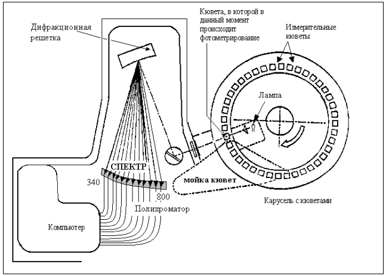
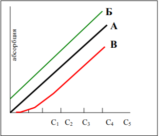
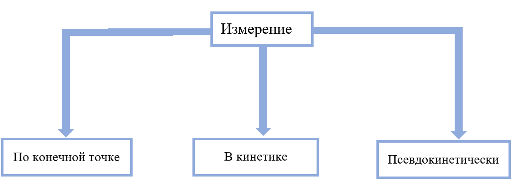

Является одним из оптических методов исследования. Основан на поглощении исследуемыми веществами определённых длин волн. Возможность использования разных реагентов для окрашивания раствора, разные спектры излучений, а также наличие у метода высокой чувствительности, точности и возможности получения многопараметровой информации делают его одним из самых распространённых в клинико-диагностических лабораториях. Для исследования данным методом можно использовать спектрометры или фотометры.
Фотометры – оптические приборы, позволяющие измерять световой поток на фиксированных длинах волн [6, 21].
Спектрофотометры – оптические приборы, использующие сплошные спектры.
Основывается на свойстве веществ выборочно поглощать монохроматические световые волны. Характер и степень светопоглощения раствора оказывают влияние на его окраску, которая связана, непосредственно, с концентрацией раствора.
К адсорбционной фотометрии относят спектрофотомерию, нефелометрию и атомно-адсорбционную фотометрию. Для определения концентрации веществ с помощью адсорбционной фотометрии используют закон Бугера-Лаберта-Бера.
Адсорбция раствора прямо пропорциональна концентрации растворённого вещества. Для каждого вещества характерен свой спектр поглощения, часто разнится для окисленных и восстановленных форм.
Отношение интенсивности монохроматического потока излучения, прошедшего через исследуемый объект, к интенсивности первоначального светового потока именуется пропусканием, или прозрачностью (светопроницаемостью) раствора и обозначается буквой Т. Обычно выражается в процентах:
где It – интенсивность света, прошедшего через раствор; I₀ – интенсивность падающего на раствор света; l – толщина слоя раствора в сантиметрах.
Светопроницаемость раствора даёт представление о том, какая часть светового потока пропускается через раствор, а оптическая плотность характеризует долю света, поглощённого им.
Разрешение (чувствительность оптической системы) – минимальная разница в оптической плотности раствора в кювете в 1 см, которую может различить прибор.
Ограничения по диапазону оптической плотности накладывают соответствующие ограничения на диапазон измеряемых концентраций аналитов. Результатом этого является то, что абсорбционная фотометрия надежно регистрирует изменения содержания аналитов в пределах 1–2 порядков и не более. Данный метод подходит для измерений общего белка, билирубина, глюкозы, активности АСТ, АЛТ, ЛГД, ЩФ. Гормоны и онкомаркеры таким методом не обнаруживаются.
Используют показатели оптической плотности жидкости, а не её пропускания.
Значение абсорбции (оптической плотности) – это произведение величины концентрации на толщину слоя раствора. Практически одинаковые показатели экстинкции получают при фотометрии исходного раствора в кювете с длиной оптического пути 1 см и того же раствора, предварительно разведенного в 2 раза, но в кювете с длиной оптического пути 2 см.
К повышению чувствительности измерения приводит удлинение оптического пути за счет сокращения поперечного сечения кюветы (при этом объем раствора остается прежним). Однако возможности этого приема фотометрии ограничены, так как чем уже и длиннее кювета, тем большие требования предъявляются к фокусировке. Поэтому большинство клинико-биохимических исследований рассчитано на проведение фотометрий с длинной оптического пути в 1 см, этот режим фотометрии самый правильный.
А благодаря использованию проточных кювет точность фотометрии значительно возрастает. Чаще всего клинико-биохимические исследования проводятся в диапазоне волн от 400 до 700 нм. Особенно широко распространена регистрация содержания НАД·Н2 и НАДФ·Н2 по поглощению света с длиной волны 340 нм.
Для исследований в инфракрасном спектре используют обычные стеклянные кюветы, а для исследований в ультрафиолетовом диапазоне – кюветы из стекла с содержанием кварца или сапфира.
Источник света находится внутри карусели с измерительными кюветами. Карусель через фиксированные промежутки времени, например, через 15 с, совершает оборот, при котором все кюветы освещаются белым светом, проходящим через входную щель. Прошедший через кювету свет разлагается на дифракционной решетке в спектр и измеряется серией детекторов, каждый из которых настроен на определенную длину спектра, включая измерение в ультрафиолете и ближнем инфракрасном диапазоне (полихроматор).
Для монохроматических измерений оценивается сигнал с одного из 12 детекторов, а при бихроматическом измерении берутся одновременно результаты с 2 детекторов. Бихроматическое измерение дает более устойчивые результаты, поскольку можно компенсировать флуктуацию в условиях измерения, таких как напряжение источника питания, температура и др.
Компьютер анализирует результаты измерений и контролирует работу почти всех узлов анализатора, представляет результаты в конечном виде.

Для построения калибровочных графиков используют несколько концентраций определяемого вещества, изготовленного в качестве калибратора с разным уровнем концентрации, определенной точным референтным методом. На оси абсцисс откладывается концентрация, а на оси ординат – абсорбция. Если закон светопоглощения соблюдается, график будет иметь вид прямой линии, проходящей через нулевую точку.

Варианты при построении калибровочного графика при линейной зависимости экстинкции от концентрации исследуемого вещества:
При работе на современных анализаторах оператору фактически приходится проводить калибровку каждый день, при этом построение и использование графиков осуществляется автоматически. Для каждого прибора необходимо проводить свою калибровку.
Анализируемая и калибровочная пробы обрабатываются в одинаковых условиях. Поэтому при больших сериях исследований калибровочную пробу рекомендуют исследовать в начале серии и примерно через каждые 20 анализируемых проб, определяя отношение сст / Аст или фактор (F).
По стандарту: Ci = Ai * Ccm / Acm
По фактору: c = A * F
В опытной и стандартной пробах должен обрабатываться одинаковый объем образца. Метод справедлив только на линейном диапазоне (зависимость адсорбции от концентрации).

Измерение по конечной точке: основано на измерении образовавшегося продукта за прошедший период инкубации. Проводится параллельно со стандартной пробой для расчёта результатов.
По фиксированному времени: метод основан на количестве образовавшегося продукта за определённый период времени с последующим расчётом активности по стандарту. Осуществляется на фотометрах и спектрофотометрах.
В кинетике: измеряют трижды оптическую плотность с одинаковой периодичностью, составляют среднюю величину и производят расчёт с учётом температуры инкубации. Используется монохроматизированный поток света и термостатическая кювета (+37°C).
Последние два метода отличаются скоростью и точностью. Основаны на оптическом тесте Варбурга, заключающемся в ферментативном превращении НАДН в НАД (и наоборот) под действием ЛДГ. Эти реакции различаются оптической плотностью при длинах волн 340, 334 и 365 нм.